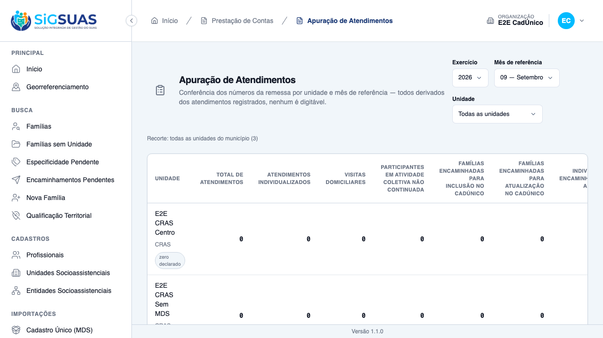

Relatório de Critérios de Aceite — US-SCFV-03
Resumo
Dezesseis critérios de aceite. Seis evidenciados no navegador (CA01, CA04, CA05, CA13, CA14 e o zero declarado, com quatro prints — três critérios compartilham a captura geral da tela, cada um com sua própria legenda) e onze cobertos pela suíte automatizada. A suíte fecha com 88 testes e 438 asserções no filtro AttendanceReport|Scfv, sem regressão nas fases anteriores (Participation 176, FollowUp 221, isolamento 93). Os 37 cenários Playwright — cobrindo as seis histórias das fases F3 e F4 — passam contra base recém-semeada. Nenhum critério em falha e nenhuma migration criada. Com esta entrega o leiaute 15.8 fecha por completo — o segundo dos seis leiautes de execução a ficar pronto.
| CA | Critério | Situação | Evidência |
|---|---|---|---|
| CA01 | Contadores de faixa etária | ATENDIDO | Print + Pest |
| CA02 | Famílias contam uma vez | ATENDIDO (SUITE) | Pest |
| CA03 | Grupo do PAIF conta como grupo, mas não nas faixas etárias | ATENDIDO (SUITE) | Pest |
| CA04 | Idosos conta pelo serviço, não pela idade | ATENDIDO | Print + Pest |
| CA05 | Idoso em SCFV de adultos pode não contar em faixa alguma | ATENDIDO | Print + Pest |
| CA06 | Pessoas com deficiência incluem os grupos do PAIF e do PAEFI | ATENDIDO (SUITE) | Pest |
| CA07 | Idade apurada no último dia do mês | ATENDIDO (SUITE) | Pest |
| CA08 | Pessoa em dois grupos conta uma vez | ATENDIDO (SUITE) | Pest |
| CA09 | Ingresso e desligamento no meio do mês contam | ATENDIDO (SUITE) | Pest |
| CA10 | Desligada no mês anterior não conta | ATENDIDO (SUITE) | Pest |
| CA11 | Participação cancelada não conta | ATENDIDO (SUITE) | Pest |
| CA12 | Ausência de informação de deficiência não vira negativa | ATENDIDO (SUITE) | Pest |
| CA13 | Participação vigente há muito tempo é sinalizada | ATENDIDO | Print + Pest |
| CA14 | O oitavo contador segue vindo da F1 | ATENDIDO | Print + Pest |
| CA15 | Operacional vê apenas as suas unidades | ATENDIDO (SUITE) | Pest |
| CA16 | Isolamento entre municípios | ATENDIDO (SUITE) | Pest (TenantIsolation) |
| Extra | Zero declarado | ATENDIDO | Print + Pest |
CA01 — Contadores de faixa etária ATENDIDO
Quando consulto a apuração de uma unidade, então os quatro contadores de faixa etária apresentam os números apurados.
- Os sete contadores do 15.8 aparecem, e a tela os agrupa pela natureza da contagem — famílias, faixas etárias e o contador restrito por serviço — em vez de enfileirar sete números que não somam entre si.
- O oitavo campo do leiaute (atividade coletiva não continuada) continua vindo dos atendimentos da fase F1, com a origem marcada na tela.

CA02 — Famílias contam uma vez ATENDIDO (SUITE)
Dado uma família com três integrantes participando de grupos, então ela é contada uma vez.
- Famílias distintas, não linhas.
Sem prova visual: critério verificado pela suíte automatizada (ver anexo).
CA03 — Grupo do PAIF conta como grupo, mas não nas faixas etárias ATENDIDO (SUITE)
Dado um integrante só em grupo do PAIF, então a família conta em "famílias em grupos" e ele não conta em nenhuma faixa etária.
- A elegibilidade é lida dos atributos do serviço, nunca do código.
- ⚠️ Interpretação declarada: se o TCE-AL entender que grupo do PAIF é serviço de convivência, os quatro contadores de faixa aumentam — e a correção é
UPDATEem duas linhas do cadastro.
Sem prova visual: critério verificado pela suíte automatizada (ver anexo).
CA04 — Idosos conta pelo serviço, não pela idade ATENDIDO
Dado pessoas no SCFV para idosos e outras com mais de 60 anos em SCFV de adultos, então o contador de idosos apresenta apenas as primeiras.
- É o único contador restrito pelo serviço, e não pela idade.
- A tela declara esse escopo — sem isso, o número parece estar faltando gente.

CA05 — Idoso em SCFV de adultos pode não contar em faixa alguma ATENDIDO
Dado uma pessoa de mais de 60 anos participando do SCFV para adultos, então ela não entra em "idosos" nem em "adultos", e a tela indica que isso é consequência da redação do leiaute.
- O cenário move de verdade a participação entre serviços e recarrega a apuração — prova a assimetria no comportamento, não em mock.
- O aviso só acende para quem ficou fora de todo contador: quem está em "idosos" não o dispara.
- Sem essa explicação, o número parece errado para quem lê de fora e vira chamado.

CA06 — Pessoas com deficiência incluem os grupos do PAIF e do PAEFI ATENDIDO (SUITE)
Dado pessoas com deficiência em SCFV e em grupo do PAEFI, então o contador soma as duas situações.
- Conjunto ampliado: o universo é o de "grupo", não o de SCFV.
- Não evidenciado no navegador: o seed E2E não tem integrante com deficiência marcada.
Sem prova visual: critério verificado pela suíte automatizada (ver anexo).
CA07 — Idade apurada no último dia do mês ATENDIDO (SUITE)
Dado uma criança que completou 7 anos no meio do mês, então ela é contada na faixa de 7 a 14.
- O critério vive em um único ponto do service — sem ele, dois cálculos do mesmo mês divergem.
- ⚠️ Inferência declarada (pergunta 3 ao TCE-AL).
Sem prova visual: critério verificado pela suíte automatizada (ver anexo).
CA08 — Pessoa em dois grupos conta uma vez ATENDIDO (SUITE)
Dado um adolescente em SCFV e também em grupo do PAIF, então ele é contado uma vez na sua faixa.
- Os campos contam pessoas, não participações.
Sem prova visual: critério verificado pela suíte automatizada (ver anexo).
CA09 — Ingresso e desligamento no meio do mês contam ATENDIDO (SUITE)
Dado quem ingressou no dia 20 e quem se desligou no dia 5, então os dois contam.
- Vigência em qualquer dia do mês — ⚠️ inferência de maior impacto do épico (pergunta 1 ao TCE-AL).
Sem prova visual: critério verificado pela suíte automatizada (ver anexo).
CA10 — Desligada no mês anterior não conta ATENDIDO (SUITE)
Dado quem se desligou no mês anterior, então não conta neste mês e conta naquele.
- O leiaute é do período de referência.
Sem prova visual: critério verificado pela suíte automatizada (ver anexo).
CA11 — Participação cancelada não conta ATENDIDO (SUITE)
Dado uma participação cancelada, então os contadores diminuem.
- Cancelar mantém a linha no prontuário e a tira da apuração.
Sem prova visual: critério verificado pela suíte automatizada (ver anexo).
CA12 — Ausência de informação de deficiência não vira negativa ATENDIDO (SUITE)
Dado um participante sem informação de deficiência, então ele não é contado, e isso não é apresentado como declaração de que ele não tem.
- ⚠️ Limitação de schema registrada:
has_disabilityé boolean NOT NULL defaultfalse— o banco não distingue "não tem" de "não informado". A decisão foi contar apenastruee nunca afirmar o contrário na tela, sem migration em tabela alimentada pelo CadÚnico.
Sem prova visual: critério verificado pela suíte automatizada (ver anexo).
CA13 — Participação vigente há muito tempo é sinalizada ATENDIDO
Dado participações em andamento há mais de doze meses, então são sinalizadas como ponto de atenção.
- Conta participações, não pessoas — é a única contagem da história que não é por pessoa distinta.
- O limiar vem do payload e é ajustável por configuração, sem deploy.
- Corte de 12 meses, mais generoso que os 6 do acompanhamento, porque SCFV é serviço continuado.
CA14 — O oitavo contador segue vindo da F1 ATENDIDO
Quando olho o contador de atividade coletiva não continuada, então ele vem dos atendimentos e não é afetado pelas participações desta fase.
- Verificado que permanece inalterado; a tela marca a origem para o gestor não procurar o número no lugar errado.
CA15 — Operacional vê apenas as suas unidades ATENDIDO (SUITE)
Dado que sou Operacional lotado em uma unidade, então vejo apenas ela.
- Reusa o recorte por perfil já existente.
- A tela exige
attendance-reports.view, que o Operacional não possui — é tela de gestão; o add-on LGPD não é exigido, por ser agregada.
Sem prova visual: critério verificado pela suíte automatizada (ver anexo).
CA16 — Isolamento entre municípios ATENDIDO (SUITE)
Quando consulto a apuração, então vejo apenas unidades do meu município.
- 93 testes verdes no diretório de isolamento.
Sem prova visual: critério verificado pela suíte automatizada (ver anexo).
Extra — Zero declarado ATENDIDO
Dado uma unidade sem participação, então ela aparece com zero apurado.
- O selo só existe quando os contadores vêm apurados valendo zero — a diferença entre "apuramos e deu zero" e "não sabemos".
- Mesma ressalva das fases anteriores: o sistema não distingue "não participa" de "não registrou".

Observações e ressalvas
⚠️ QUATRO REGRAS QUE DETERMINAM NÚMEROS DECLARADOS SÃO INFERÊNCIA — validação do TCE-AL necessária
Esta é a ressalva mais importante do dossiê. Quatro decisões que mudam os números enviados na remessa não vieram do instrumento nem do PO. Cada uma está isolada em um ponto do código para cair barato — mas depois de declarado, corrigir significa reenviar.
- O que é participação regular — adotado: vigente em qualquer dia do mês. É a de maior impacto do épico: se o Tribunal esperar frequência efetiva, a fase deixa de ser uma extensão de apuração e passa a exigir registro de presença por encontro.
- Quando a idade é apurada — adotado: último dia do mês de referência.
- Grupos do PAIF e do PAEFI contam nas faixas etárias? — adotado: não. Se sim, os quatro contadores de faixa aumentam. A correção é
UPDATEem duas linhas do cadastro global, sem migration e sem código. - Pessoas distintas, não participações — adotado: cada pessoa conta uma vez na sua faixa.
Nenhuma migration criada — o índice já estava lá
O EXPLAIN das cinco consultas, em PostgreSQL, mostrou que todas usam o índice parcial criado na US-SCFV-02 exatamente para elas. Nenhuma faz varredura sequencial. É o segundo épico seguido em que antecipar o índice na HU anterior evita migration na HU de apuração.
A assimetria provada em comportamento, não em mock
O cenário do idoso fora de faixa é o mais caro de montar e o mais valioso: ele move de verdade a participação do SCFV para idosos para o SCFV de adultos e recarrega a apuração. A pessoa deixa de contar em "idosos" (restrito pelo serviço) e não entra em "adultos" (que vai até 59 anos) — ficando fora de toda faixa. O aviso só acende para quem ficou fora de todo contador.
O que este dossiê não prova
- Pessoas com deficiência (CA06) na tela — o seed E2E não tem integrante com deficiência marcada. Coberto pela suíte, com o conjunto ampliado verificado.
- As faixas de crianças e pré-adolescentes na tela — exigem massa etária que o seed não monta. Cobertas pela suíte.
Anexo I — Cobertura automatizada (Pest 4, --filter="AttendanceReport|Scfv")
PASS Tests\Unit\ParticipationDomainsSeedTest ✓ it marca counts_as_scfv_elderly em exatamente um servico — o codigo… 0.44s ✓ it respeita a invariante elderly ⟹ scfv ⟹ group em todas as linhas 0.02s PASS Tests\Unit\ParticipationServiceInvariantTest ✓ it nao tem nenhuma linha violando elderly ⟹ scfv ⟹ group 0.03s PASS Tests\Feature\Api\Client\AttendanceReportReferralCrossTest ✓ it never feeds the CadUnico counters from attendance type 4 — 9 att… 0.13s PASS Tests\Feature\Api\Client\AttendanceReportTest ✓ it derives the four counters per unit and the total includes types… 0.06s ✓ it declares exactly the one remaining unavailable counter — the F2… 0.05s ✓ it excludes cancelled attendances from the report while they remain… 0.07s ✓ it counts a retroactive attendance in the month it happened, not th… 0.06s ✓ it reflects a type correction on the next query and stores nothing… 0.06s ✓ it reports attendances without an identified person separately, via… 0.06s ✓ it scopes the Operacional to units with an assignment in force TODA… 0.07s ✓ it shows the master every unit of the tenant, and a unit without mo… 0.06s ✓ it never leaks citizen data in the serialized payload — no name, no… 0.06s ✓ it keeps counting past attendances of a type inactivated in the Glo… 0.06s ✓ it narrows the report to a single unit when social_unit_uuid is giv… 0.07s ✓ it keeps unit_count at the Operacional full scope when filtering on… 0.19s ✓ it rejects with a named 422 a unit outside the user scope — never a… 0.11s ✓ it rejects an out-of-range reference month with the SIAP named mess… 0.07s ✓ it denies the Operacional without the manual grant — the restricted… 0.06s ✓ it denies a granted user without an ACTIVE professional bond in the… 0.06s ✓ it lights the three referral counters with distinct families and pe… 0.07s ✓ it counts the same family ONCE with two inclusion referrals in the… 0.06s ✓ it counts two distinct people of the SAME family in the BPC counter… 0.06s ✓ it counts the family once in EACH counter — distinct per counter, n… 0.06s ✓ it drops a cancelled referral from the counters while it stays visi… 0.07s ✓ it keeps counting a referral whose outcome became not_attended — th… 0.06s ✓ it counts a retroactive referral in the month it was made, not the… 0.06s ✓ it keeps counting past referrals of a code inactivated in the Globa… 0.05s ✓ it keeps counting past referrals of a code SOFT-DELETED in the Glob… 0.06s ✓ it declares zero on the three referral counters for a unit without… 0.06s ✓ it never feeds the BPC counter from a referral row without a person… 0.06s PASS Tests\Feature\Client\AttendanceReportFollowUpTest ✓ it reproduces the canonical scenario of §9 in the HTTP payload — 3… 0.07s ✓ it lights up families_in_follow_up inside counters and removes it f… 0.06s ✓ it declares the four profiles that depend on F6/F7 — never omitted,… 0.05s ✓ it keeps the four unavailable profiles declared even for a unit wit… 0.06s ✓ it exposes stale_follow_ups as a quantity and the configured thresh… 0.06s ✓ it carries the threshold from config so the cut can move without a… 0.06s ✓ it shows the operator only the units of the current assignment, wit… 0.06s ✓ it never counts follow-ups of another organization in any of the ne… 0.06s ✓ it persists absolutely nothing — identical row counts before and af… 0.05s ✓ it never leaks any citizen data through the new follow-up fields (D… 0.06s ✓ it never counts a cancelled follow-up in the HTTP payload (CA11/RN1… 0.05s ✓ it keeps the new blocks consistent when the report is narrowed to a… 0.06s PASS Tests\Feature\Client\AttendanceReportScfvTest ✓ it acende os sete contadores do 15.8 no payload da unidade, com os… 0.08s ✓ it nao altera o oitavo contador do 15.8, que vem dos ATENDIMENTOS c… 0.08s ✓ it mantem o oitavo contador em zero quando a unidade so tem partici… 0.06s ✓ it devolve a nota da RN05 e o ponto de atencao da RN11 POR UNIDADE,… 0.06s ✓ it declara ZERO para a unidade sem nenhuma participacao, nunca ause… 0.05s ✓ it mostra ao Operacional apenas a unidade em que esta lotado, com o… 0.07s ✓ it nega o acesso ao Operacional sem a concessao do Master, antes de… 0.05s ✓ it nunca conta participacao de outra organizacao no payload (CA16/R… 0.08s ✓ it nao persiste absolutamente nada ao apurar o payload (RN10) 0.08s ✓ it nunca devolve identificador de pessoa ou familia nos campos do 1… 0.06s PASS Tests\Feature\Client\FamilyMemberParticipationTest ✓ it registers the member participation in the elderly SCFV, signed a… 0.07s ✓ it KEEPS listing a participation whose service or location was late… 0.07s PASS Tests\Feature\Client\ScfvReportServiceTest ✓ it conta a familia com TRES integrantes em grupos UMA unica vez (CA… 0.03s ✓ it conta o ingresso no dia 20 e o encerramento no dia 5 do mes apur… 0.03s ✓ it nao conta a participacao encerrada no mes anterior, mas conta na… 0.02s ✓ it nao conta a participacao CANCELADA em contador nenhum (CA11/RN09… 0.02s ✓ it nao conta participacao em servico que nao alimenta o 15.8 (D04) 0.03s ✓ it conta 1 em cada unidade quando a familia participa em duas (RN08… 0.02s ✓ it acende as quatro faixas etarias com pessoas distintas do SCFV (C… 0.12s ✓ it conta o integrante so do grupo do PAIF como familia em grupo e e… 0.02s ✓ it apura a idade no ULTIMO DIA do mes: quem faz 7 anos em 15/08 est… 0.03s ✓ it conta UMA vez a pessoa que participa de dois grupos (CA08/RN06) 0.02s ✓ it nao coloca em faixa alguma o participante sem data de nascimento… 0.02s ✓ it conta idosos pelo SERVICO e nao inclui quem tem mais de 60 anos… 0.07s ✓ it nao conta em faixa alguma o idoso matriculado no SCFV de adultos… 0.07s ✓ it nao acende a nota do CA05 quando todo idoso do recorte esta decl… 0.07s ✓ it conta em idosos quem esta no SCFV de idosos mesmo com menos de 6… 0.02s ✓ it conta pessoas com deficiencia somando os grupos do PAIF e do PAE… 0.04s ✓ it conta UMA vez a pessoa com deficiencia que participa de dois gru… 0.03s ✓ it nao conta o participante sem informacao de deficiencia, e nao af… 0.03s ✓ it apura as tres naturezas com numeros DIFERENTES entre si, sem der… 0.04s ✓ it sinaliza as participacoes em andamento ha mais de 12 meses (CA13… 0.05s ✓ it conta PARTICIPACOES, e nao pessoas, no ponto de atencao (RN11) 0.03s ✓ it respeita o corte configurado sem deploy (D10) 0.02s ✓ it devolve zero DECLARADO para a unidade sem nenhuma participacao (… 0.02s ✓ it curto-circuita sem tocar o banco quando o recorte de unidades e… 0.02s ✓ it nao conta participacao de outro municipio (CA16/RN13) 0.03s ✓ it nao persiste absolutamente nada — a apuracao e derivada (RN10/D0… 0.03s ✓ it nao devolve nenhum identificador de pessoa ou familia no resulta… 0.02s PASS Tests\Feature\Manager\ParticipationDomainsTest ✓ it identifica o SCFV para adultos como extensao do produto, e so el… 0.03s ✓ it recusa a combinacao que viola elderly ⟹ scfv ⟹ group na criacao 0.02s ✓ it recusa desligar o grupo de um servico que continua contando como… 0.02s PASS Tests\Feature\TenantIsolation\AttendanceReportIsolationTest ✓ it shows the tenant A master only tenant A units and numbers (CA12/… 0.05s ✓ it rejects a tenant B unit used as filter with the same named 422 —… 0.05s ✓ it never counts tenant B referrals in the tenant A referral counter… 0.06s Tests: 88 passed (438 assertions) Duration: 5.66s
Anexo II — Cenários Playwright do prontuário e da apuração (37 cenários, F3 + F4)
[globalSetup] Rate-limiter cache do Laravel zerado. Running 37 tests using 2 workers ✓ 1 [setup] › tests/auth.setup.ts:10:6 › autentica super admin (UI) e propaga cookies para o api-client (1.3s) [tenant-auth.setup] sessão de tenant pronta em /Users/binho/Projetos/esuas-all/e2e/.auth/tenant.json ✓ 2 [setup] › tests/tenant-auth.setup.ts:82:6 › autentica usuário do tenant (client) e propaga cookies para o api-client (1.7s) ✓ 3 [chromium-tenant] › tests/client/family-follow-up.spec.ts:222:7 › US-ACOMP-02 — acompanhamento familiar no prontuário (client) › (g) família nunca acompanhada mostra o estado vazio do bloco (6.6s) ✓ 4 [chromium-tenant] › tests/client/family-follow-up.spec.ts:245:7 › US-ACOMP-02 — acompanhamento familiar no prontuário (client) › (b) num CRAS o select oferece só o PAIF — o PAEFI não é ofertado (7.2s) ✓ 5 [chromium-tenant] › tests/client/family-follow-up.spec.ts:263:7 › US-ACOMP-02 — acompanhamento familiar no prontuário (client) › (d) data futura é barrada no próprio formulário (7.9s) ✓ 6 [chromium-tenant] › tests/client/family-follow-up.spec.ts:291:7 › US-ACOMP-02 — acompanhamento familiar no prontuário (client) › (a) registra o ingresso no PAIF a partir de um CRAS (9.3s) ✓ 7 [chromium-tenant] › tests/client/family-follow-up.spec.ts:324:7 › US-ACOMP-02 — acompanhamento familiar no prontuário (client) › (c) segundo ingresso na mesma unidade e serviço é recusado, apontando o existente (9.3s) ✓ 8 [chromium-tenant] › tests/client/family-follow-up.spec.ts:352:7 › US-ACOMP-02 — acompanhamento familiar no prontuário (client) › (e) cancelar com motivo mantém a linha no prontuário, marcada (7.6s) ✓ 9 [chromium-tenant] › tests/client/family-follow-up.spec.ts:417:7 › US-ACOMP-02 — negativa de acesso ao bloco de acompanhamento (client) › (f) Operacional sem acesso não vê o bloco, e a negativa não nomeia unidade (6.4s) ✓ 10 [chromium-tenant] › tests/client/family-follow-up.spec.ts:540:7 › US-ACOMP-03 — desligamento e avaliação de resultados (client) › (c) os meses de acompanhamento são apresentados calculados e NÃO digitáveis (6.6s) ✓ 11 [chromium-tenant] › tests/client/family-follow-up.spec.ts:561:7 › US-ACOMP-03 — desligamento e avaliação de resultados (client) › (d) "não se aplica" vem sugerida quando não houve encaminhamento — e é alterável (7.4s) ✓ 12 [chromium-tenant] › tests/client/family-follow-up.spec.ts:591:7 › US-ACOMP-03 — desligamento e avaliação de resultados (client) › (b) concluir sem a avaliação é recusado, e o acompanhamento continua vigente (7.9s) ✓ 13 [chromium-tenant] › tests/client/family-follow-up.spec.ts:617:7 › US-ACOMP-03 — desligamento e avaliação de resultados (client) › (e) a combinação incoerente pede confirmação — e, confirmada, é salva como informada (9.8s) ✓ 14 [chromium-tenant] › tests/client/family-follow-up.spec.ts:665:7 › US-ACOMP-03 — desligamento e avaliação de resultados (client) › (a) o desligamento aparece no prontuário com a avaliação ao lado (6.6s) ✓ 15 [chromium-tenant] › tests/client/family-follow-up.spec.ts:688:7 › US-ACOMP-03 — desligamento e avaliação de resultados (client) › (f) a avaliação não tem ação de excluir nem de editar — e não há reabertura (6.6s) ✓ 16 [chromium-tenant] › tests/client/family-follow-up.spec.ts:709:7 › US-ACOMP-03 — desligamento e avaliação de resultados (client) › reingresso após desligamento é aceito, e a linha anterior permanece intacta (9.2s) ✓ 17 [chromium-tenant] › tests/client/family-follow-up.spec.ts:821:7 › US-SCFV-02 — participação em serviços no prontuário (client) › (h) família sem participação mostra o estado vazio, não uma tabela vazia (6.6s) ✓ 18 [chromium-tenant] › tests/client/family-follow-up.spec.ts:838:7 › US-SCFV-02 — participação em serviços no prontuário (client) › (e) data futura é barrada no próprio formulário (6.6s) ✓ 19 [chromium-tenant] › tests/client/family-follow-up.spec.ts:856:7 › US-SCFV-02 — participação em serviços no prontuário (client) › (b) local fora da unidade exige a identificação de onde acontece (8.1s) ✓ 20 [chromium-tenant] › tests/client/family-follow-up.spec.ts:881:7 › US-SCFV-02 — participação em serviços no prontuário (client) › (CA15) o serviço "Outros" exige descrição; os demais não (8.1s) ✓ 21 [chromium-tenant] › tests/client/family-follow-up.spec.ts:899:7 › US-SCFV-02 — participação em serviços no prontuário (client) › (CA04) integrante desvinculado não é oferecido na escolha (7.4s) ✓ 22 [chromium-tenant] › tests/client/family-follow-up.spec.ts:915:7 › US-SCFV-02 — participação em serviços no prontuário (client) › (a) registra a participação no SCFV para idosos — happy path (10.2s) ✓ 23 [chromium-tenant] › tests/client/family-follow-up.spec.ts:945:7 › US-SCFV-02 — participação em serviços no prontuário (client) › (c) segundo registro no mesmo serviço é recusado, apontando o existente (10.3s) ✓ 24 [chromium-tenant] › tests/client/family-follow-up.spec.ts:1008:7 › US-SCFV-02 — participação em serviços no prontuário (client) › (d) a mesma pessoa participa de serviços diferentes ao mesmo tempo (10.1s) ✓ 25 [chromium-tenant] › tests/client/family-follow-up.spec.ts:1027:7 › US-SCFV-02 — participação em serviços no prontuário (client) › (f) cancelar com motivo mantém a linha no prontuário, marcada (7.7s) ✓ 26 [chromium-tenant] › tests/client/family-follow-up.spec.ts:1233:7 › US-ACOMP-04 — acesso ao prontuário pela unidade que acompanha (client) › (a) quando a minha unidade acompanha, o prontuário da família de outra unidade abre (5.9s) ✓ 27 [chromium-tenant] › tests/client/family-follow-up.spec.ts:1244:7 › US-ACOMP-04 — acesso ao prontuário pela unidade que acompanha (client) › (b) o acesso é ao prontuário INTEIRO — composição, atendimentos e encaminhamentos (6.0s) ✓ 28 [chromium-tenant] › tests/client/family-follow-up.spec.ts:1261:7 › US-ACOMP-04 — acesso ao prontuário pela unidade que acompanha (client) › (c) cancelado NÃO concede: o acesso fecha, e a negativa declara os dois eixos sem nomear unidade (12.7s) ✓ 29 [chromium-tenant] › tests/client/family-follow-up.spec.ts:1308:7 › US-ACOMP-04 — acesso ao prontuário pela unidade que acompanha (client) › DESLIGADO mantém o acesso — só o cancelamento fecha (US-ACOMP-03 destrava este par) (17.4s) ✓ 30 [chromium-tenant] › tests/client/family-follow-up.spec.ts:1463:7 › US-ACOMP-05 — contadores de acompanhamento na apuração (client) › (a) os contadores do 15.6 e do 15.7 aparecem ACESOS, onde antes diziam indisponível (55ms) ✓ 31 [chromium-tenant] › tests/client/family-follow-up.spec.ts:1485:7 › US-ACOMP-05 — contadores de acompanhamento na apuração (client) › (b) os quatro perfis indisponíveis são IDENTIFICADOS com a fase de que dependem (57ms) ✓ 32 [chromium-tenant] › tests/client/family-follow-up.spec.ts:1527:7 › US-ACOMP-05 — contadores de acompanhamento na apuração (client) › (c) o ponto de atenção lista acompanhamentos vigentes sem nenhum atendimento (25ms) ✓ 33 [chromium-tenant] › tests/client/family-follow-up.spec.ts:1543:7 › US-ACOMP-05 — contadores de acompanhamento na apuração (client) › (e) unidade sem nenhum acompanhamento aparece com ZERO DECLARADO (29ms) ✓ 34 [chromium-tenant] › tests/client/family-follow-up.spec.ts:1661:7 › US-SCFV-03 — contadores do leiaute 15.8 na apuração (client) › (a) os sete contadores do 15.8 aparecem, agrupados pela NATUREZA de cada contagem (57ms) ✓ 35 [chromium-tenant] › tests/client/family-follow-up.spec.ts:1699:7 › US-SCFV-03 — contadores do leiaute 15.8 na apuração (client) › (b) idosos é contado pelo SERVIÇO — a tela explica o escopo (32ms) ✓ 36 [chromium-tenant] › tests/client/family-follow-up.spec.ts:1720:7 › US-SCFV-03 — contadores do leiaute 15.8 na apuração (client) › (c) idoso em SCFV que não é o de idosos pode não contar em faixa alguma — e a tela avisa (11.7s) ✓ 37 [chromium-tenant] › tests/client/family-follow-up.spec.ts:1782:7 › US-SCFV-03 — contadores do leiaute 15.8 na apuração (client) › (e) unidade sem participação aparece com ZERO DECLARADO (33ms) 37 passed (4.5m)